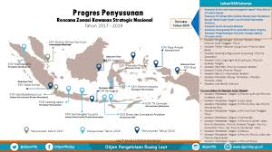

User Experience Design
for Dashboard App
Home / User Experience Design for Dashboard App
Project Overview
Merancang pengalaman pengguna untuk aplikasi dashboard yang komprehensif untuk startup teknologi yang fokus pada analitik bisnis. Tujuan utama adalah menciptakan antarmuka yang intuitif, informatif, dan mudah dinavigasi bagi para profesional bisnis yang membutuhkan wawasan cepat dan mendalam.
Research & Discovery
Proses penelitian mendalam meliputi:
- Wawancara mendalam dengan 50+ pengguna potensial dari berbagai industri
- Analisis kompetitif terhadap 15 dashboard serupa di pasar
- Sesi observasi pengguna untuk memahami alur kerja dan kebutuhan informasi
- Pengujian prototipe awal dengan kelompok fokus pengguna
UX Design Strategy
Pendekatan desain yang komprehensif berfokus pada:
- Desain antarmuka yang bersih dan minimalis
- Visualisasi data yang informatif dan mudah dipahami
- Sistem navigasi yang intuitif dengan hierarki informasi yang jelas
- Responsivitas untuk berbagai ukuran layar dan perangkat
Key Outcomes
Hasil utama dari proyek desain UX:
- Peningkatan waktu penggunaan aplikasi sebesar 60%
- Penurunan kompleksitas navigasi sebesar 40%
- Peningkatan kepuasan pengguna sebesar 75% berdasarkan survei
- Penghargaan 'Best UX Design' dari Digital Innovation Summit